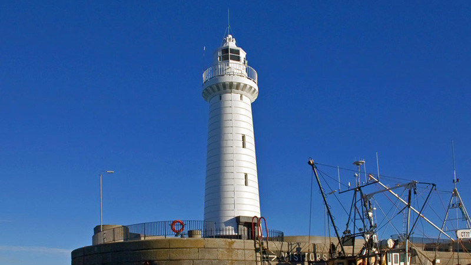

Lighthouses of Ireland
Tory Island Lighthouse

A Lighthouse on Tory Island was requested by the Harbour Commissioners and Merchants of Sligo in April 1828.
Approval for the project was granted by the Ballast Board in November and Statutory Sanction was received from Trinity House in December 1828. At this early stage it was decided that when Tory Island light was established, Aranmore light would be extinguished.
The tower and buildings were designed by Inspector George Halpin and built by the workmen of the Board under his supervision.
The light was established on 1st August 1832. The tower is 27m high and the light 40m above sea level, high water. In May 1956 the colour of the tower was altered from black to black with a single white band.
A dioptric lens with a multi-wick oil lamp replaced the original oil lamps and reflectors in 1862.
A major alteration was made to the optic in 1887. The lens revolved giving a flashing character and the light source was coal gas which lasted until 1923. Gas was made in the gas works at the station.
From 1923 until 1972 the light source was vaporised paraffin. In 1972 the light source was converted to electric. At the same time the intensity of the light was increased giving a range of 30 nautical miles. The duration of the flash was increased to 0.2 seconds. The character of the light remained the same at Gp Fl (4) every 30 seconds. The light source is a Biform 1330mm dioptric annual lens (the main light being in the upper tier) with PRB22 gearless drive and electric MBI 1kW lamps.
A fog signal was established in 1887. In March 1989 it was changed from a diaphone signal to an electric horn. From 1978 until October 1994, when the fog signal was discontinued, the light was exhibited in poor visibility when the fog signal was sounding.
A radiobeacon was established in 1931. In more recent times utilisation of radio direction finders by mariners has been, to a great extent, superseded by more modern technology. For this reason the Commissioners discontinued their Medium Frequency Radiobeacon service on the 1st February 1999.
An encrypted Differential Global Positioning System (DGPS) station at Tory Island, provided by Scorpio Navigation Services on a commercial, user pays basis, commenced on 4 June 1993. This service terminated on 28 February 1998. In June 1998 the Commissioners of Irish lights commenced their own unencrypted DGPS service on a trial basis.
In March 1990 the lighthouse was converted to automatic operation and the keepers were withdrawn from the station. The station is in the care of an Attendant and the aids to navigation are also monitored via a telemetry link from Irish Lights Dun Laoghaire.
 Free distribute and adapt with the requirement that the same rights be preserved in secondary works created.
Free distribute and adapt with the requirement that the same rights be preserved in secondary works created.